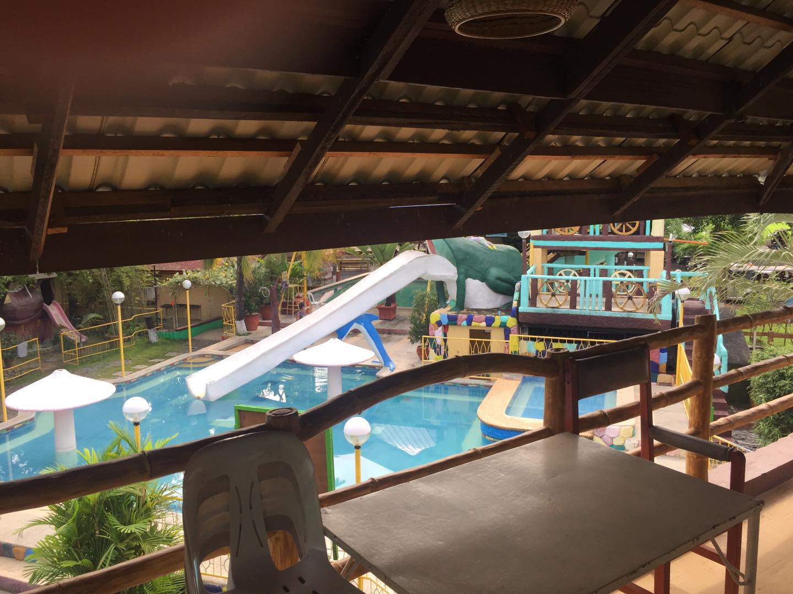
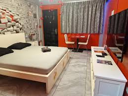
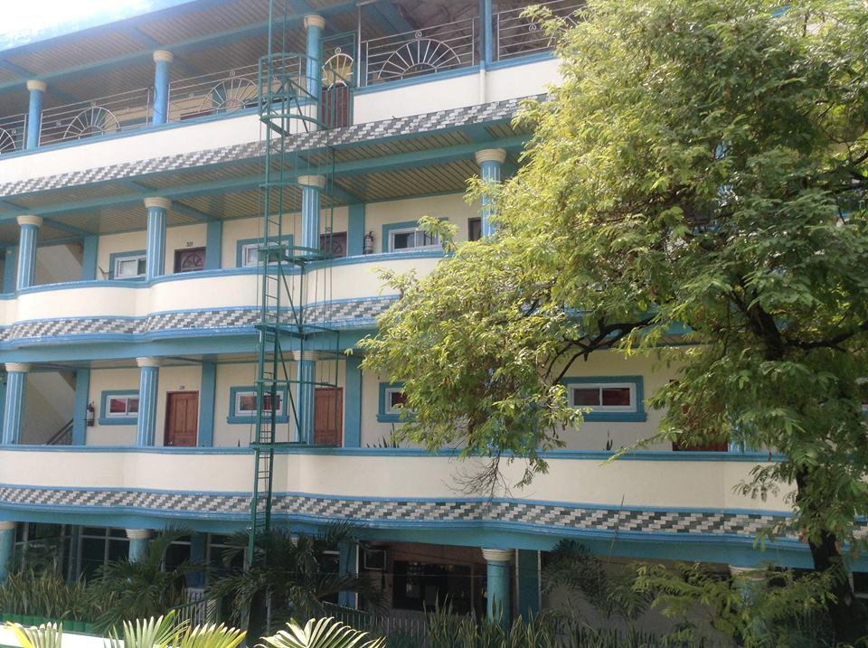
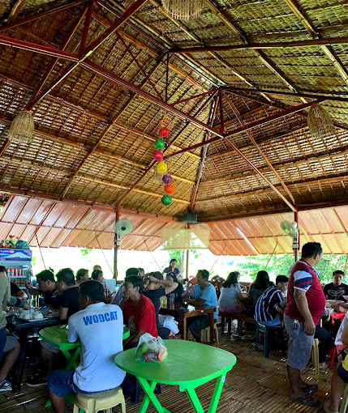
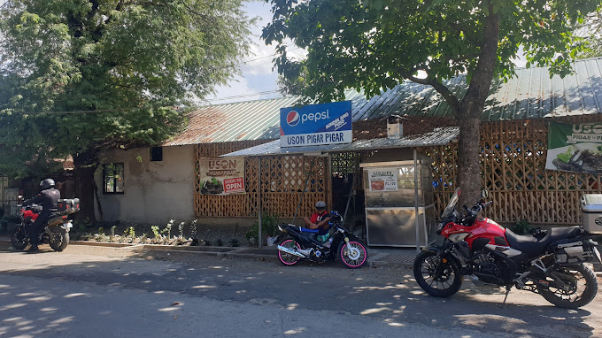
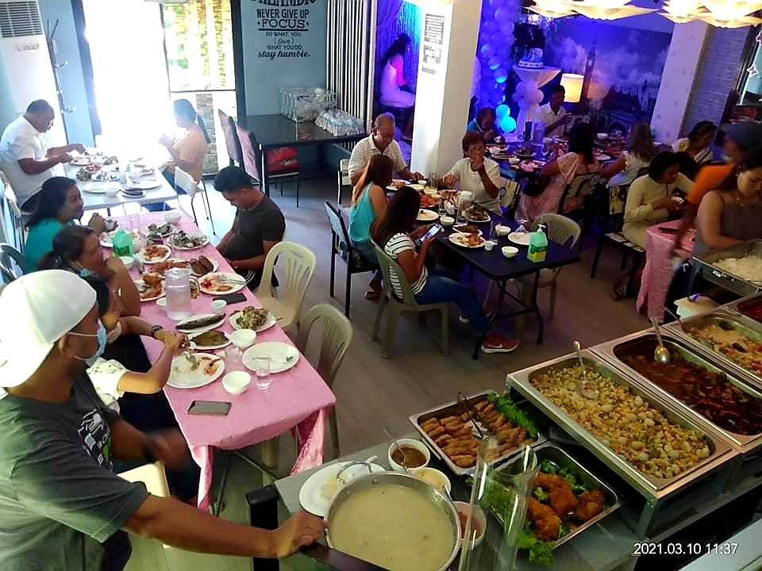
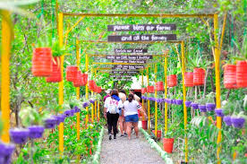
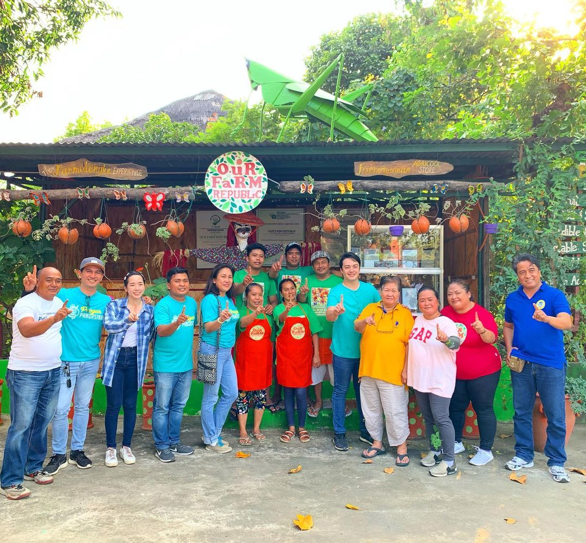
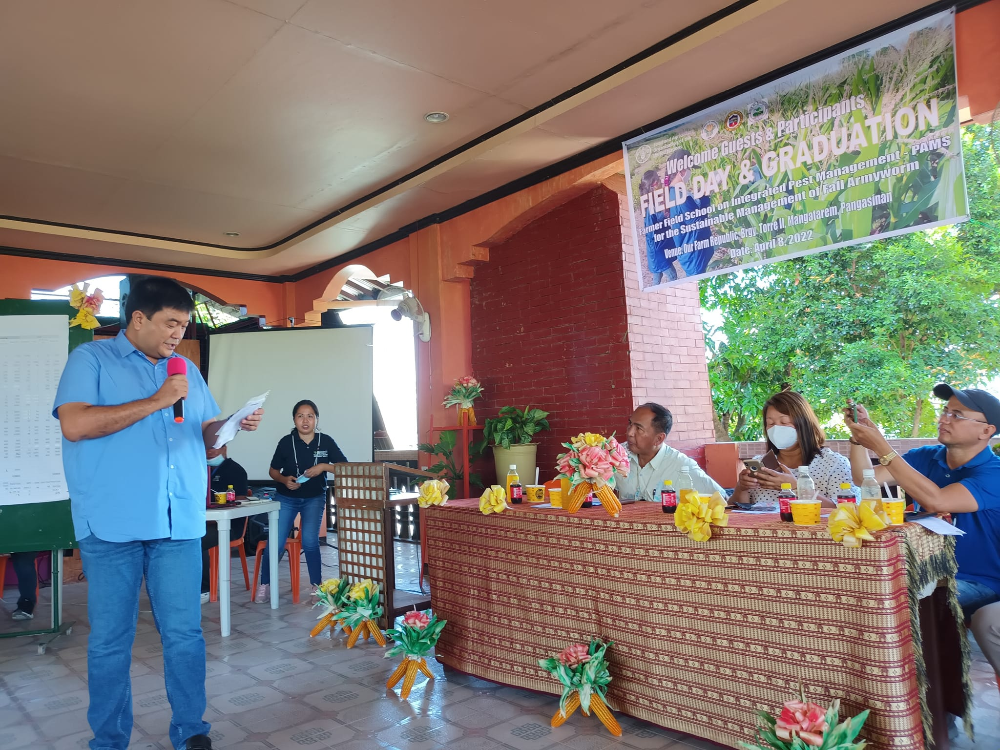

Dandan’s Garden & Farm Resort
pin_dropBarangay Paul, Mangatarem, Pangasinan, Mangatarem

Geelen Inn
pin_dropMangatarem, 2413 Pangasinan

Twin Havens Inn
pin_drop Mangatarem, 2413 Pangasinan

Don Facundo’s Bulaluhan & Restaurant
pin_drop Q7JG+PQ2, Mangatarem, Pangasinan
0933 867 8061

Uson pigar pigar mangatarem
pin_drop General Luna St, Mangatarem, Pangasinan
0916 592 6111

Nobel's Tea House, Grill & Restobar
pin_dropBurgos St, Mangatarem, 2413 Pangasinan
0956 369 5174
How to get there?
By Bus
If you're traveling by bus, head to the nearest bus terminal that offers routes to Mangatarem, Pangasinan.
Board a bus bound for Mangatarem and inform the conductor or driver of your destination at Our Farm Republic. They may be able to drop you off at a nearby point from where you can reach the farm.
Once you arrive in Mangatarem, you can take a tricycle or other local transportation to reach Our Farm Republic. Make sure to have the farm's address handy or ask for directions from locals.
By Car
From your location, navigate towards the town of Mangatarem in Pangasinan using major highways or routes.
Once you reach Mangatarem, continue towards the specific location of Our Farm Republic. You may need to ask locals for directions or use a navigation app to guide you to the farm.
Our Farm Republic is located in Mangatarem, Pangasinan, so follow signs pointing towards the farm or input the farm's address into your GPS for precise directions.
pon arrival at Our Farm Republic, you can park your car in designated parking areas and begin your farm exploration and activities..
Travel tips
- Gather information about Our Farm Republic, including its location, operating hours, and activities. Plan your visit accordingly, considering factors such as weather conditions and transportation options.
- Prior to your visit, consider contacting Our Farm Republic to inquire about any specific requirements or reservations. This will help ensure that you have a confirmed slot for activities or accommodations, if needed.
- Determine your mode of transportation to Our Farm Republic. Whether you're driving your own vehicle or taking public transportation, plan your route and estimate travel time accordingly. It's also helpful to have a navigation app or GPS device to guide you along the way.
- Prepare essential items for your visit, such as comfortable clothing and footwear suitable for farm activities. Bring sun protection like hats, sunscreen, and sunglasses, as well as insect repellent. Don't forget to bring a refillable water bottle to stay hydrated.
- Our Farm Republic offers a range of activities, including farm tours, training sessions, and seminars. Check their website or contact them in advance to know the available activities during your visit. Be prepared to engage and learn about organic farming practices.
- Our Farm Republic promotes organic farming and sustainability. Respect the farm and its surroundings by following any guidelines provided. Avoid littering and dispose of trash properly. Treat the farm animals and plants with care and respect.
- Our Farm Republic offers fresh produce for sale. Consider supporting local agriculture by purchasing organic fruits, vegetables, herbs, and spices from their farm store. This allows you to bring home some farm-fresh goodness.
- Take the opportunity to learn about organic farming and sustainable agriculture during your visit. Ask questions, engage with the farm staff, and participate in any educational activities or workshops available.

1.Farm Tour
2. Nature Walks

3. Farm to table Dining

4. Take a Picture

5. Learn and Discover